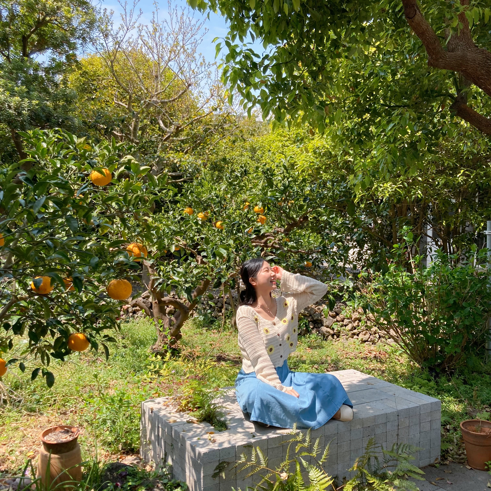

자기소개
안녕하세요! 엘리스 AI 아카데미를 통해 좋은 동료와
좋은 배움을 얻고 싶은 채은빈입니다!🥰
전공을 살려 식품기업에서 일을 하다가
학교에서 살짝 공부했던 프로그래밍이 계속 아른거려(..)
개발자가 되고 싶어 엘리스 AI트랙에 참여했습니다.
잘부탁드립니다!
신상정보
🖤 이름 : 채은빈
🖤 성별 : 여
🖤 나이 : 26
🖤 거주지 : 울산
🖤 MBTI : INFJ
🖤 학력 : 경희대학교 외식경영학과
AI 트랙에서 가장 기대되는 점
개발자가 되기 위한 첫 걸음을 시작하는 곳!
열심히 트랙을 완주하여 꼭 개발자가 되고 싶습니다.
다양한 과정을 통해 여러 분야를 경험하고
진로탐색 및 취업에 도움 받기를 기대합니다.
동료 레이서에게 하고 싶은 말
웹페이지를 만드는 시점 기준 2주차 입니다.
아직 교류할 기회가 많이 없어 낯을 가리고 있지만
곧 친해질 수 있기를 기대하고 있습니다.😊
다들 디스코드에서 좋은 정보도 공유해주시고
어려움이 있을 때마다 답변 잘해주시는 멋진 분들..!
같이 엘리스 트랙 끝내고 원하는 곳으로 취뽀해요💪🏻